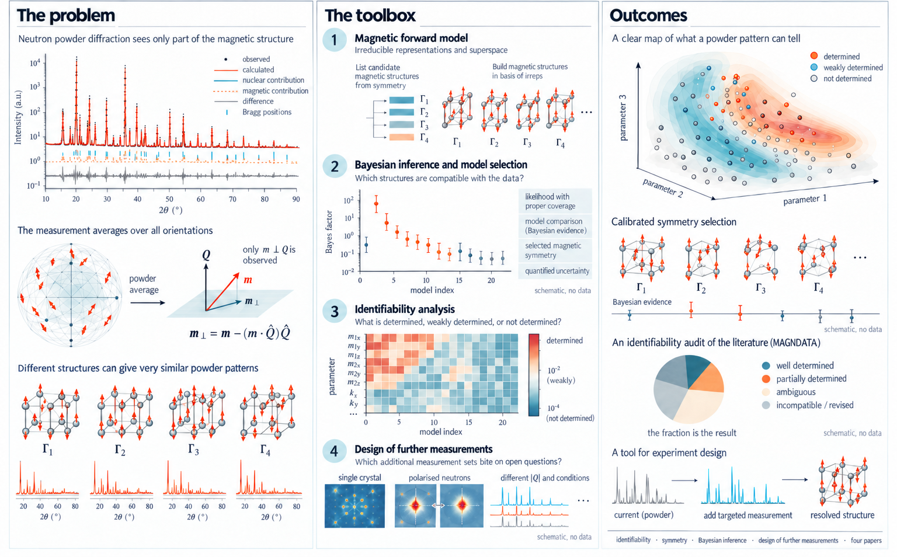

PhD thesis proposal · thermomat · Fisika Saila · EHU
Propuesta de tesis doctoral · thermomat · Fisika Saila · EHU
Identifiability, Bayesian inference and symmetry in the determination of magnetic structures
Identificabilidad, inferencia bayesiana y simetría en la determinación de estructuras magnéticas
The offer as a PDF, one pageLa oferta en PDF, una página (en inglés)
Traducción al castellano; el original, en inglés, es el PDF.
More than two thousand magnetic structures are published, most from neutron powder diffraction, and the database collecting them reports that many were described ambiguously; even NiO and MnO were revised in 2024. The measurement is the reason: the neutron sees only the component of the moment perpendicular to the scattering vector, and the powder average discards orientation, so part of a structure is not in the data, part only weakly, and part of what is reported is the model's choice. Symmetry tools list the candidates; the choice is still made by agreement factors and judgement. This thesis asks which features of a magnetic structure a powder pattern determines, which it does not, and what cuts the rest, for one pattern and for the literature. Four contributions: a magnetic forward model in irreducible-representation coordinates, in superspace, that prints the directions the data do and do not fix; magnetic symmetry chosen by Bayesian evidence with a likelihood whose coverage is tested; an identifiability audit of the commensurate structures of MAGNDATA; and which further measurement settles what the powder leaves open. Expected outcomes: a diagnostic in an open engine, calibrated symmetry selection on the group's data, the identifiability map of the literature, a design tool for beam time, four papers.
Se han publicado más de dos mil estructuras magnéticas, la mayoría a partir de difracción de neutrones en polvo, y la base de datos que las recoge señala que muchas se describieron de forma ambigua; incluso las de NiO y MnO se revisaron en 2024. La razón está en la medida: el neutrón solo ve la componente del momento perpendicular al vector de dispersión, y el promedio de polvo descarta la orientación, de modo que una parte de la estructura no está en los datos, otra solo débilmente, y otra parte de lo que se publica es elección del modelo. Las herramientas de simetría enumeran los candidatos; la elección se sigue haciendo con factores de acuerdo y criterio. Esta tesis se pregunta qué rasgos de una estructura magnética determina un difractograma de polvo, cuáles no y qué decide el resto, para un difractograma y para la literatura. Cuatro contribuciones: un modelo directo magnético en coordenadas de representaciones irreducibles, en superespacio, que muestra las direcciones que los datos fijan y las que no; la simetría magnética elegida por la evidencia bayesiana, con una verosimilitud cuya cobertura se pone a prueba; una auditoría de identificabilidad de las estructuras conmensuradas de MAGNDATA; y qué medida adicional resuelve lo que el polvo deja abierto. Resultados esperados: un diagnóstico en un motor abierto, una selección de simetría calibrada con los datos del grupo, el mapa de identificabilidad de la literatura, una herramienta de diseño para el tiempo de haz, cuatro artículos.

Nobody is expected to bring all of this. The degrees are the formal part; the rest is welcome and is taught along the way.
Nadie tiene por qué aportar todo esto. Las titulaciones son la parte formal; lo demás se valora y se aprende por el camino.
Full or partial funding is available for the thesis projects.Existe financiación total o parcial de los proyectos de tesis.
Irene Urcelay-Olabarria and Josu M. IgartuaIrene Urcelay-Olabarria y Josu M. Igartua
thermomat research group, Fisika Saila, EHUgrupo de investigación thermomat, Fisika Saila, EHU
Prof. Gabriel A. López
gabrielalejandro.lopez@ehu.eus